Microsoft 365 User Administrator Role and Responsibilities
Microsoft 365 user administrators are responsible for user management. They perform the following user management tasks:
- Create and Manage Users:
- Example: The User Administrator can create new user accounts for employees joining the organization. They can specify account details, assign licenses, and set initial configurations.
- Reset Passwords:
- Example: The User Administrator can create new user accounts for employees joining the organization. They can specify account details, assign licenses, and set initial configurations.
- Modify User Properties/Attributes:
- Example: The User Administrator can update user details such as display names, job titles, and contact information.
- Assign Licenses:
- Example: When a new employee is hired, the User Administrator can assign the necessary licenses for Microsoft 365 services like Exchange, SharePoint, and Teams.
- Create and Manage Groups:
- Example: The User Administrator can add/delete and update Microsoft 365 groups.
- Manage Group Memberships:
- Example: The User Administrator can add or remove users from distribution groups, security groups, and Microsoft 365 groups.
Assigning User Administrator Role
Follow these instructions to assign User Administrator role to a Microsoft 365 user.
- Sign in to the Microsoft 365 Admin Center:
-
Select Admin tab from the Microsoft 365 Home page
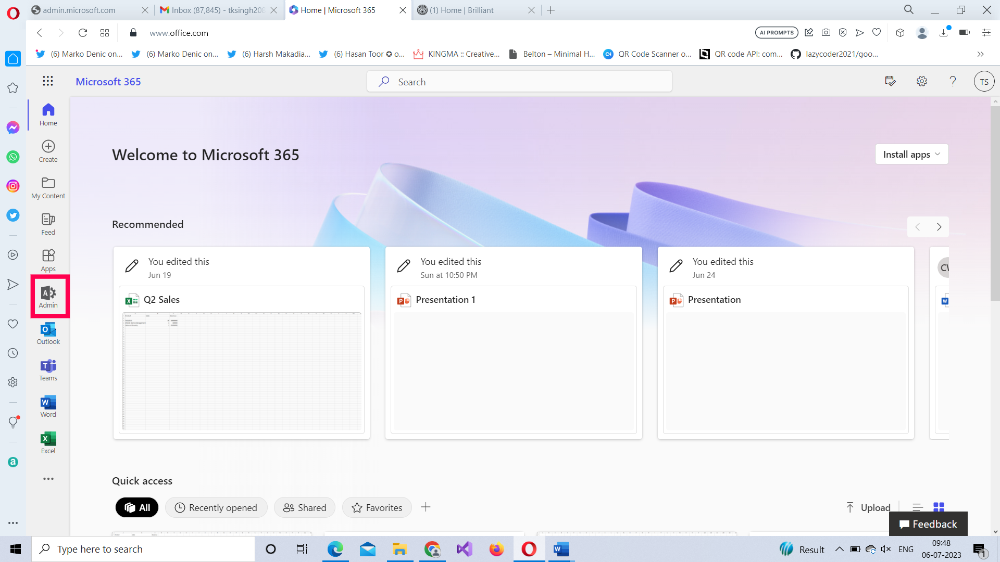
-
The Microsoft 365 Admin Center Dashboard Opens.
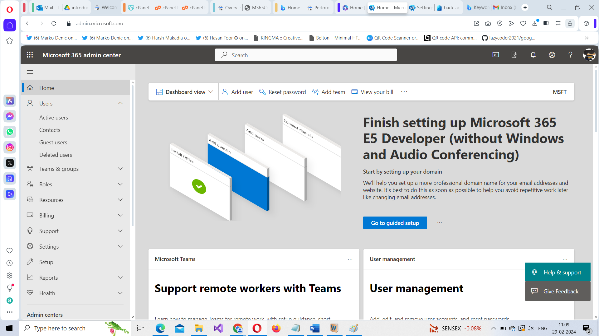
-
Select Users Active Users.
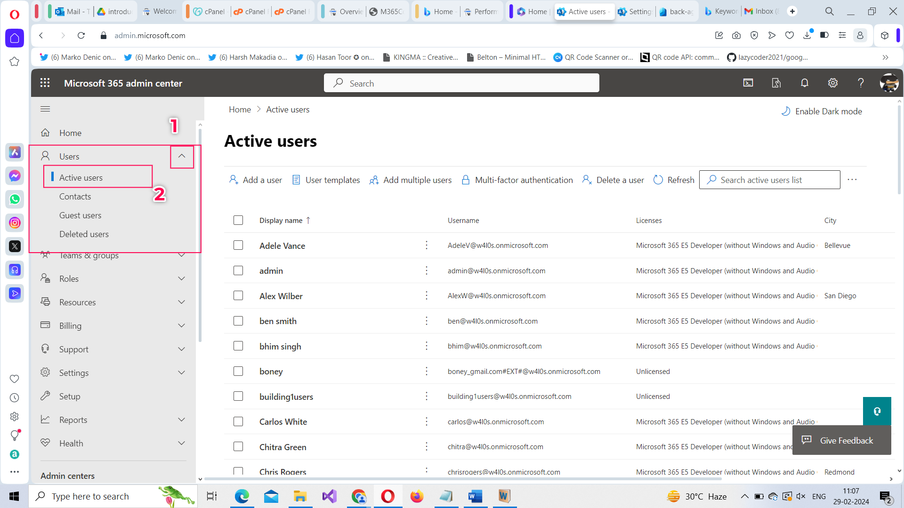
-
Select the user who is to be assigned the User Administrator role. The user details flyout opens. Select Manage roles under Roles section.
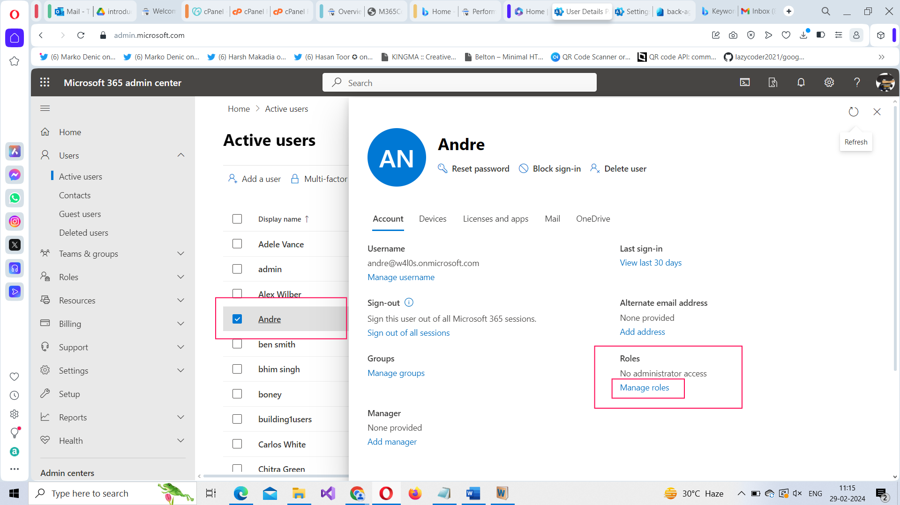
-
Select Admin center access option and then choose User Administrator role. Click Save Changes button to save the changes.
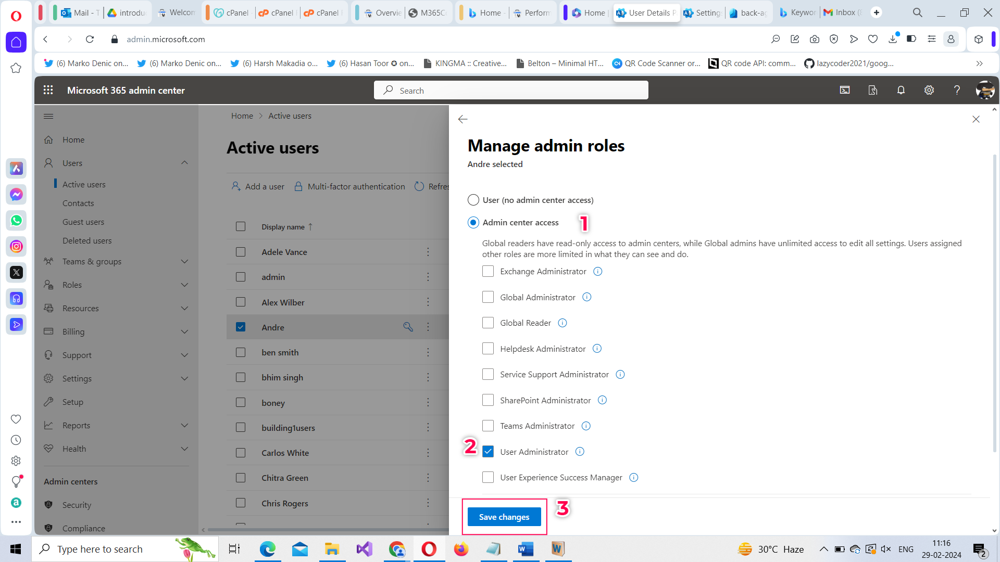
User Administrator Screen View
This is how the user administrator screen looks like with user management operations add user, edit user, reset password and delete user available right in the dashboard.
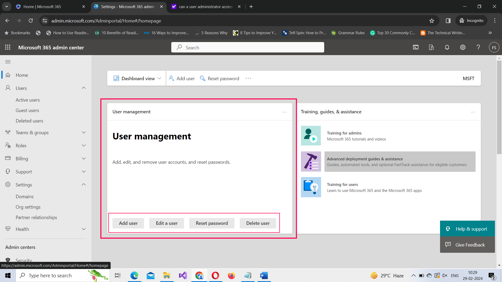
User Management from Microsoft 365 Admin Center
Follow these instructions to manage users from Microsoft 365 admin center.
-
Add a user: Click Add a user button and enter the new user’s details and save it.
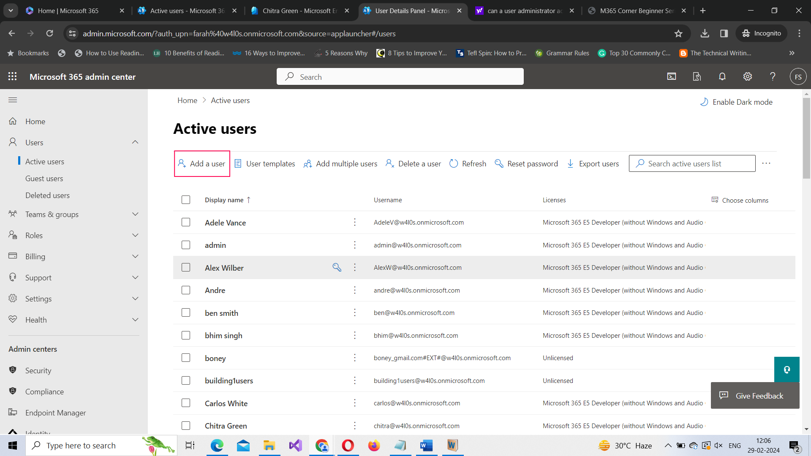
Note: You can also add multiple users by clicking Add multiple users button.
-
Delete a User: Select the user to be delete and click the Delete user button.
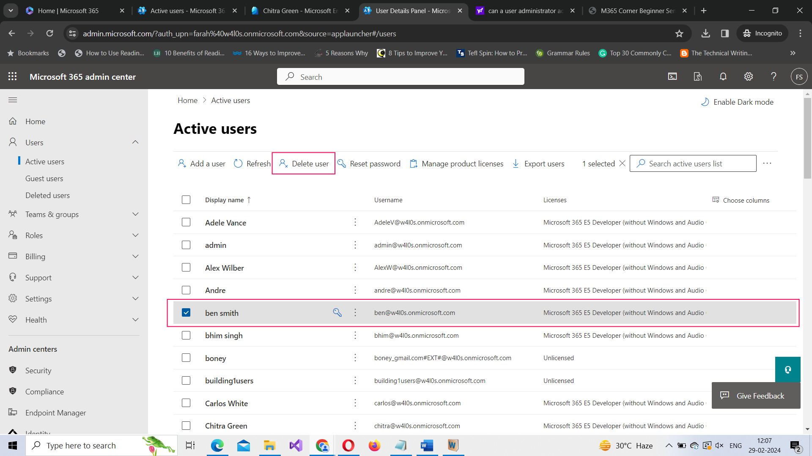
-
User Password Reset: Select the user and click the Password Reset button.
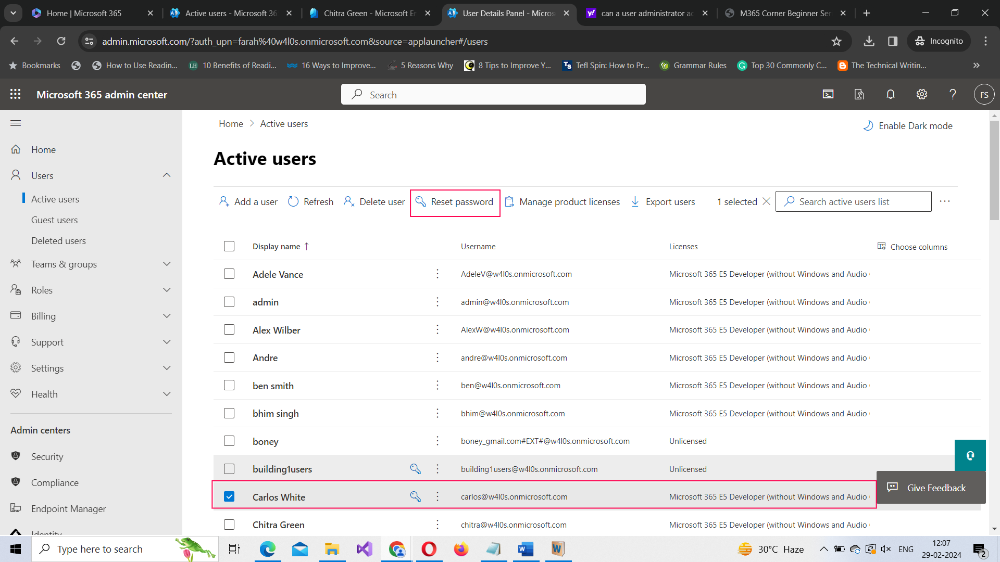
-
Editing User Properties: Select the user. The user flyout opens. Edit the desired users properties by clicking the appropriate Manage links.
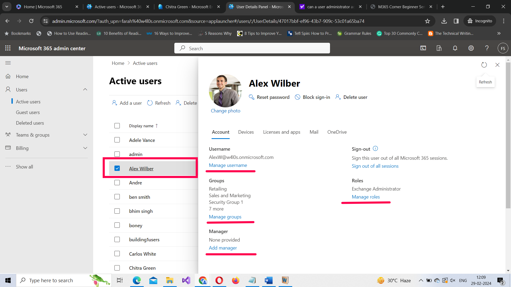
Note: You cannot edit many user properties from Microsoft 365 admin center. For full control over user properties, you should visit Microsoft Entra ID Admin Center.
User Management from Microsoft Entra ID Admin Center (with limited access)
User administrators can also manage Microsoft 365 users from Microsoft Entra ID Admin Center, but their actions are limited here, since this area falls under the purview of Security Administrators. Still, user administrators have the rights to add, update and delete Microsoft 365 users from this portal.
Accessing Microsoft Entra ID Admin Center
You can access Microsoft Entra ID Admin Center using the following 2 ways:
Managing Users from Entra ID Admin Center
Follow these instructions to manage users from Entra ID admin center.
-
Select Identity Users All users. All your users get listed.
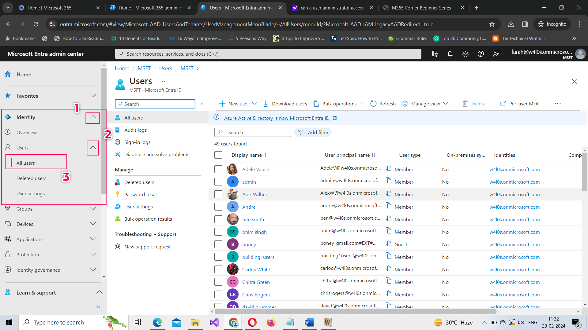
-
To add a new user, you can use the New User button and fill out the user details.
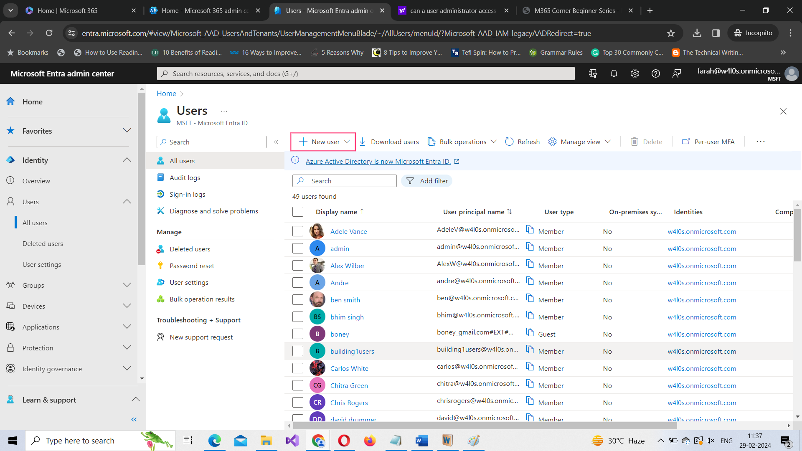
-
To delete a user, select the user and click the Delete button.
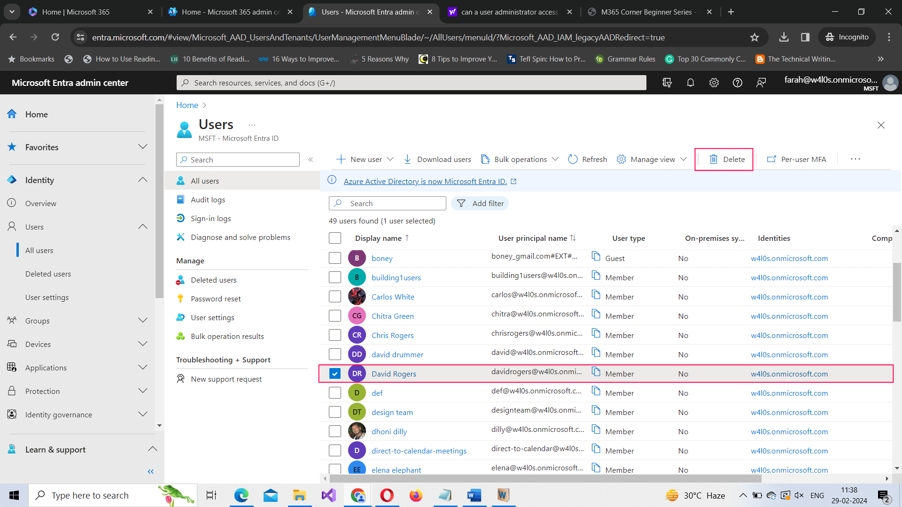
-
To update the user properties, select the user and then click Edit properties option. Update the user properties and save the user.
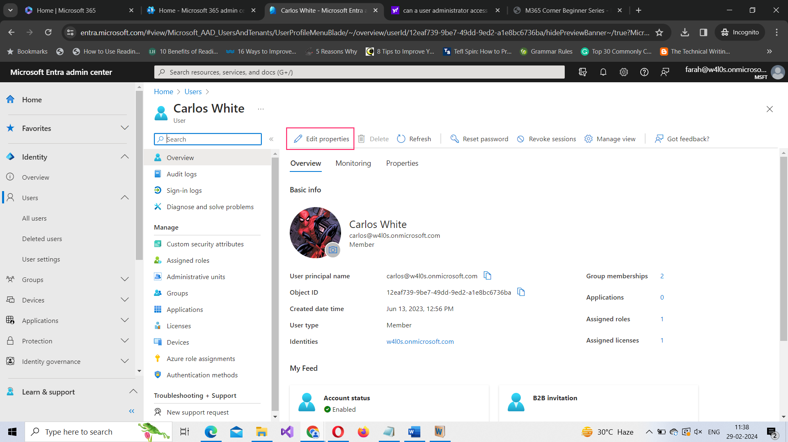